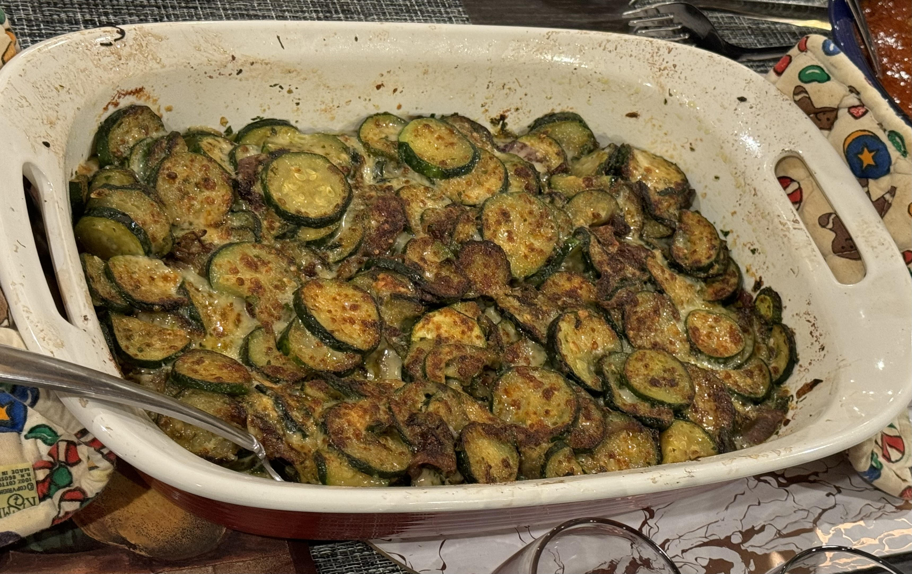

Home

Zuchinni Gratin
A simple vegetable gratin.
Ingredients
- 2+ Tbsp. Olive oil
- 4-8 Zuchinni
- 1/2 cup sliced Onion
- 1-2 Tbsp minced Garlic
- 2-4 tsp finely chopped rosemary
- 2-4 Tbsp finely chopped parseley
- 6+ Tbsp parmessan
Instrucitons
- Add oil to a large skillet set on medium-high heat and stir fry the onion and zuchinni until slightly browned. Do so in batches if needed.
- Mix in garlic, rosemary, and parseley. Stir fry until fragrant
- Meanwhile, preheat broiler for 5 minutes.
- In a baking dish sitr at least 2 Tbsp of parmessan with the zuchinni, spread the remaining cheese on top and broil until cheese is browned.